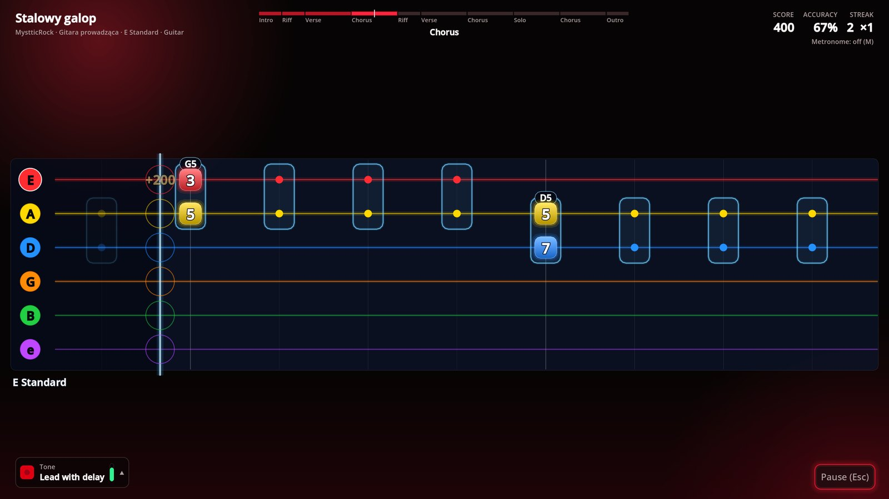
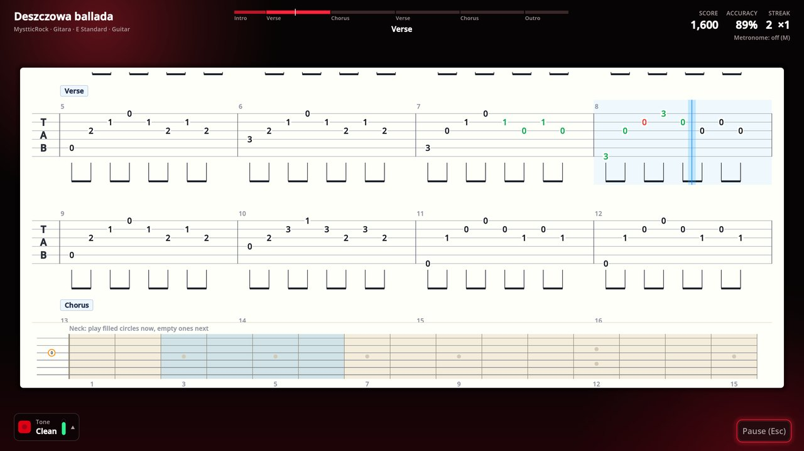
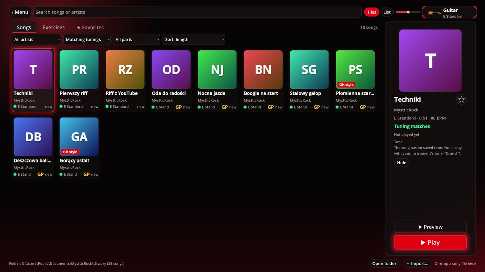
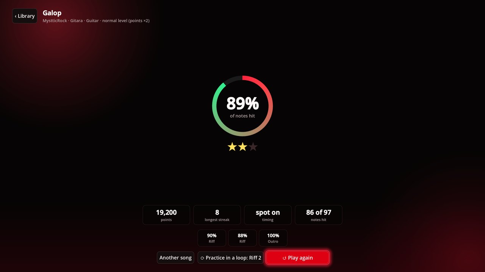
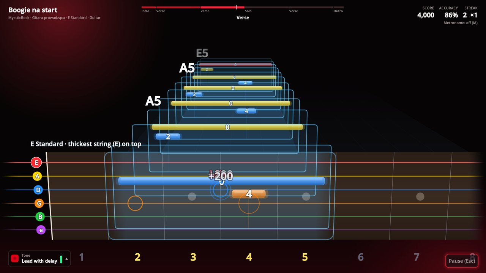
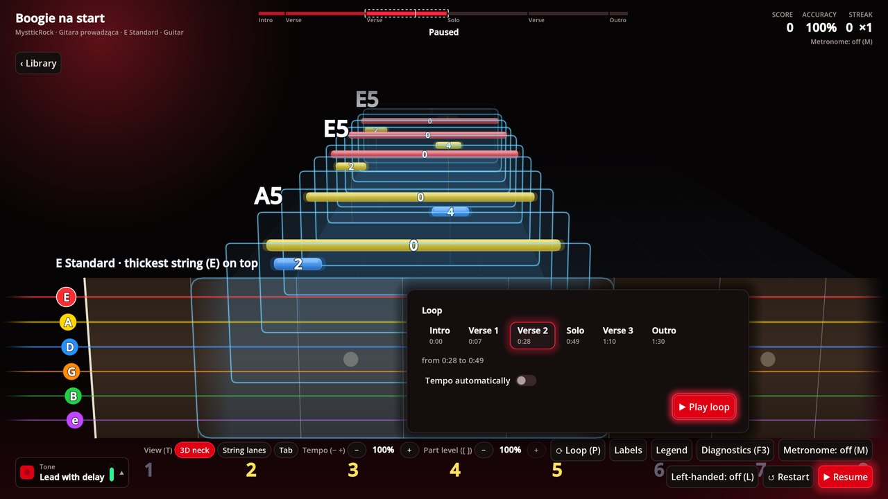
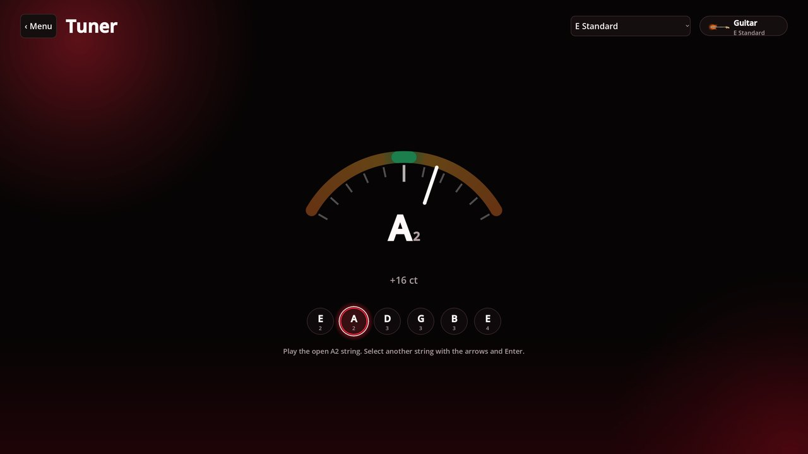
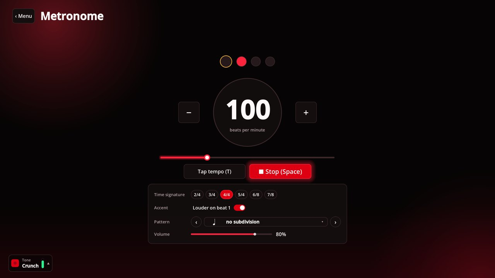
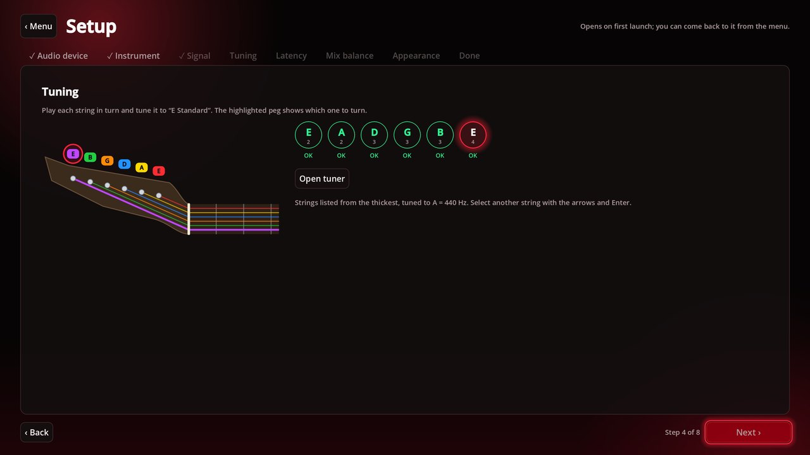

Plug in your guitar and the notes come at you in time with the music: on string lanes, on a 3D neck or as tablature. The game listens to every string and scores each note, chord and technique as you play.
Free, for Windows. The game speaks English and Polish.

Install it from the Microsoft Store. Updates come from the store, like any other app's. For now the store offers it in Poland only.
Open in Microsoft Store FreeNeeds Windows 10 or 11 (64-bit) and a way to get the guitar into the computer: any audio interface or a USB guitar cable. On the first start Setup walks you through the input, your instrument, tuning and latency; the video below shows every step.
The rhythm game you know from Rocksmith, written from scratch: your own instrument, live scoring and songs you bring yourself.
Notes, chords and techniques fly toward you on a neck like on stage, with the song's sections, a metronome and a left-handed mode. Press T and the same song moves to string lanes or turns into tablature with its rhythm.
Pitch, chords and techniques are scored live: slides, bends, mutes, harmonics, tremolo and legato. Three judging levels, then stars, how steady your timing was and your records.
The Rocksmith Real Tone cable is found by itself, or use any audio interface. WASAPI exclusive gets to about 16 ms from the string to your headphones.
Neural Amp Modeler profiles and cabinets, pedals with knobs, four slots under the keys 1 to 4, and a tone that follows the song when its pack has one.
GP3 to GP8 files become playable songs, with the backing played from the notes, your own recording matched to the notes, or a YouTube video playing next to the neck.
From 4 to 8 strings, any tuning, left or right hand. The library tells you which songs fit your instrument and which need retuning.
Ten songs and fifteen exercises come with the game, all written
for it: a first riff, a techniques workout, punk, rock and roll, heavy
metal, power metal, classic rock, a ballad, Beethoven's Ode to Joy and a
riff played over a YouTube video, and exercises for guitar and bass from
chromatic warm-ups to pentatonic positions. Songs are open
.feedpak packages: drop one on the library and it is in.
Recorded straight from the game, without any staging.








No account, no telemetry, no ads. The game goes online only for YouTube: to check a link in the import and to play a video next to the neck. The Microsoft Store installs and updates it. Details are in the privacy policy.
Settings, calibration and records stay on your computer and survive
every update. Your songs live in
Documents\MystticRock\Utwory and stay there even if you
uninstall the game.
The game brings no commercial music. What you import from Guitar Pro, with your recordings, stays in your own library.